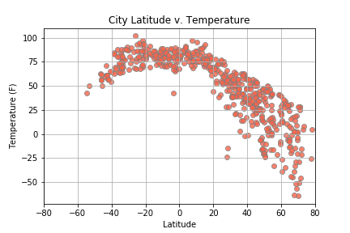

Summary: Latitude v. Temperature
The purpose of this project was to analyze how weather changes as you get closer to
the equator.
To accomplish this analysis, we first pulled data from the OpenWeatherMap API to assemble a dataset over 500
cities.

After assembling the dataset, we used Matplotlib to plot various aspects of the weather vs. latitude. Factors we looked at included: temperature, cloudiness, wind speed, and humidity. This site provides the source data and visualizations created as part of the analysis, as well as explainations and descriptions of any trends and coorelations witnessed.